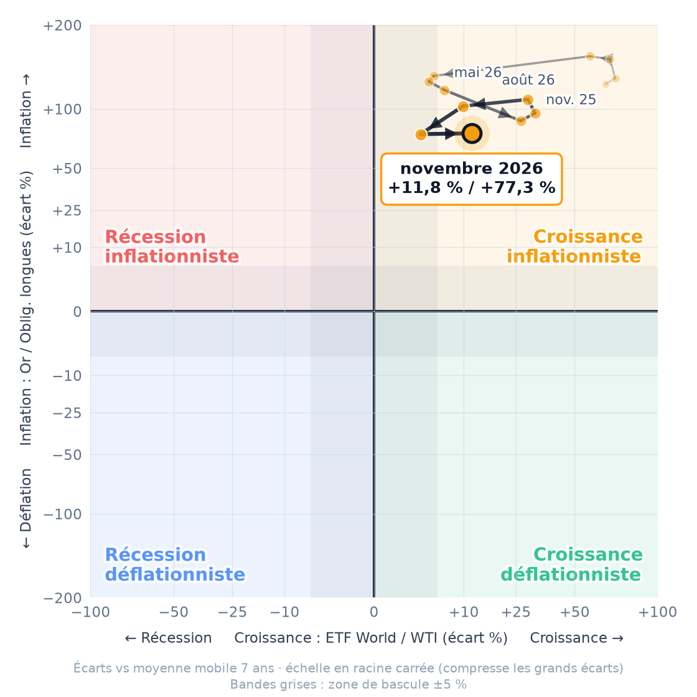

Croissance +11,8 % vs moyenne 7 ans | Inflation +77,3 % vs moyenne 7 ans |
Position mensuelle sur les deux axes : à droite la croissance, en haut l'inflation.

Chaque point = un mois ; les flèches indiquent le sens du déplacement, du plus ancien (pâle) au plus récent (cerclé).
Où était le point, à quelle vitesse il bouge, et vers où.
| Moment | Cadran | Croiss. | Infl. |
|---|---|---|---|
| Il y a 12 mois novembre 2025 | ●Croissance inflationniste | +66,6 % | +126,0 % |
| Il y a 6 mois mai 2026 | ●Croissance inflationniste | +6,2 % | +119,4 % |
| Il y a 3 mois août 2026 | ●Croissance inflationniste | +29,4 % | +109,5 % |
| Il y a 1 mois octobre 2026 | ●Croissance inflationniste | +2,7 % | +76,5 % |
| Maintenant novembre 2026 | ●Croissance inflationniste | +11,8 % | +77,3 % |
Axe croissance ETF World / WTI +11,8 % il y a 3 mois : +29,4 % ↘ −5,9 pts/mois se rapproche de l'axe À ce rythme, franchissement possible dans ~2 mois (extrapolation linéaire, pas une prévision) | Axe inflation Or / Obligations longues +77,3 % il y a 3 mois : +109,5 % ↘ −10,7 pts/mois se rapproche de l'axe À ce rythme, franchissement possible dans ~7 mois (extrapolation linéaire, pas une prévision) |
Frontière la plus proche : croissance / récession (axe croissance), à 11,8 pts.
| Actif | 1 mois | 3 mois |
|---|---|---|
| ETF World (ACWI) | +0,3 % | −2,6 % |
| Or (GLD) | −0,3 % | −13,1 % |
| Obligations longues (TLT) | −2,2 % | −2,2 % |
| Pétrole WTI | −8,2 % | +11,7 % |
Titres sélectionnés automatiquement (Google Actualités) pour leur lien avec les deux ratios — sans commentaire éditorial.
Valeur actuelle de 4 000 € investis en janvier 2016.
| ●P1 · 4 × 1000 € figés | 8 781 € | +119,5 % |
| ●P2 · Règles de Gave | 12 905 € | +222,6 % |
| ●P3 · 100 % or | 13 273 € | +231,8 % |
| ●P4 · 100 % ETF World | 14 440 € | +261,0 % |
Cadre théorique de Charles Gave — ne constitue pas un conseil en investissement personnalisé.
Se désinscrire